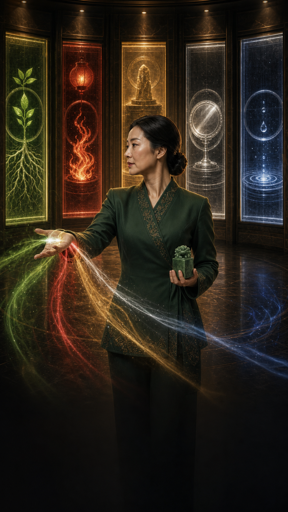

QUIT OR HOLD
나 지금 그만둬도 될까?
나가고 싶은 마음이 충동인지 결단인지, 버티면 남는 게 있는지, 언제 어떤 방식으로 정리해야 하는지 봅니다.
퇴사는 마음보다 흐름을 먼저 봐야 합니다
같은 퇴사 고민이어도 어떤 사람은 나갈 준비가 된 상태이고, 어떤 사람은 먼저 회복과 협상이 필요한 상태입니다.
지금 나와도 되는 흐름?GO/HOLD/타이밍 조정, 충동인지 결단인지 구분합니다.
왜 이렇게 힘든가사람 문제인지, 일 문제인지, 내 기질이 눌리는 지점을 봅니다.
번아웃과 멘탈몸이 먼저 보내는 신호와 죄책감·불안을 다루는 기준을 잡습니다.
나가는 것만큼 어떻게 정리할지가 중요합니다
통보 시점, 인수인계, 평판, 다시 만날 인연까지 같이 봅니다. 단, 법률·행정 판단이나 금액 산정은 하지 않습니다.
REPORT SCOPE
결제 후엔 이런 항목이 열립니다
돈과 다음 진로지출 방어선, 다음 계획, 이직형·전직형·프리형
퇴사 타이밍유리한 흐름, 피해야 할 시기, 통보 시점
남는다면버티는 조건, 요구할 것, 기한 정하기
다섯 스승목·화·토·금·수 스승의 서로 다른 조언

FIVE MENTORS
같은 퇴사 고민에도 답은 하나가 아닙니다
다섯 스승은 같은 고민을 다른 기준으로 봅니다. 밀어붙일지, 멈출지, 정리할지, 협상할지, 회복할지를 나눠 읽습니다.